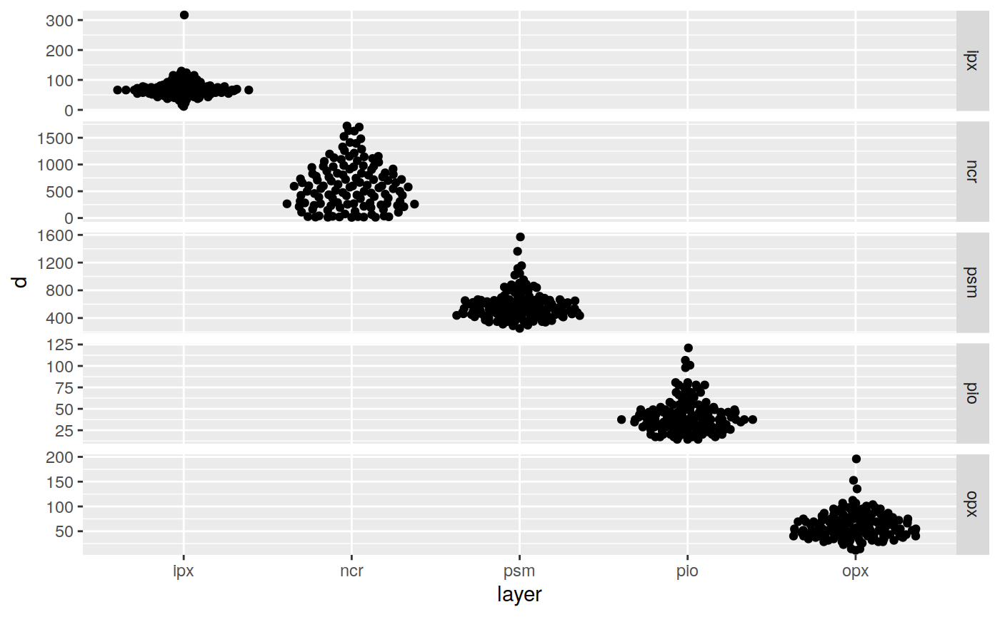
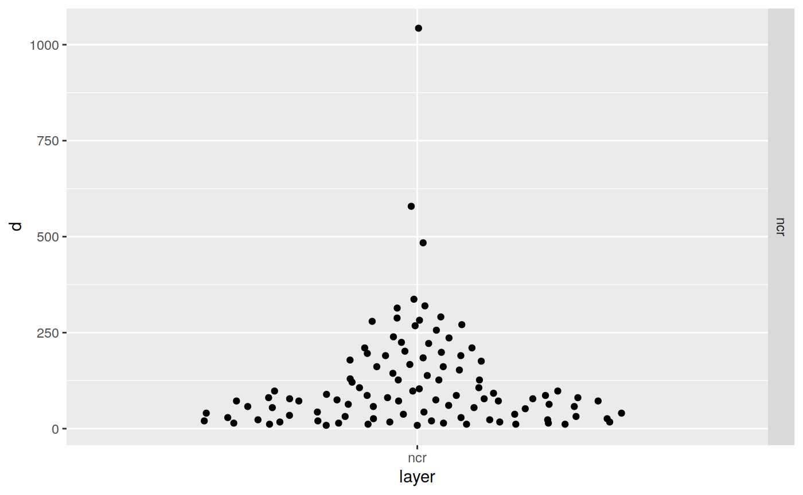

Layer Distance within each valve/transect
#> # A tibble: 5 × 4
#> layer mean sd median
#> <ord> <dbl> <dbl> <dbl>
#> 1 ipx 70.6 30.7 66.3
#> 2 ncr 613. 429. 578.
#> 3 psm 582. 207. 545.
#> 4 pio 42.6 19.7 37.5
#> 5 opx 62.4 27.2 60.5

Layer Distances within each valve/transect (in most recent
annuli)
#> # A tibble: 1 × 5
#> # Groups: layer [1]
#> layer annuli mean sd median
#> <ord> <chr> <dbl> <dbl> <dbl>
#> 1 ncr A 122. 139. 77.8
